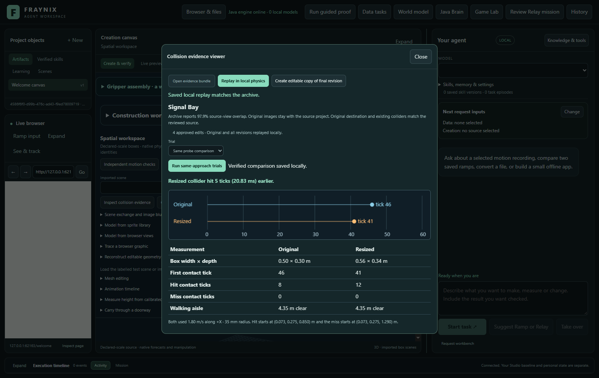
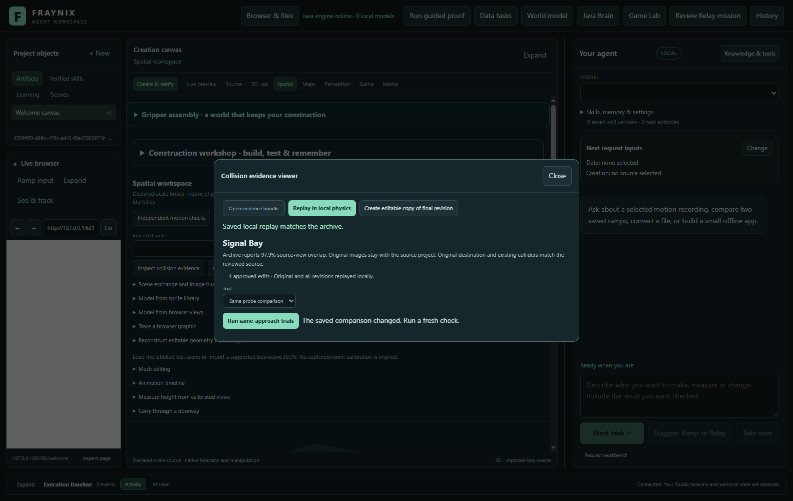

Compare collider sizes with the same probe approach
The resized Signal Bay box made first contact at tick 41. The original made contact at tick 46 from the same launch.
Both colliders on the same contact timeline

The verified comparison reopened after a desktop restart

The changed comparison is withheld while the archived replay remains available
System files
Open source